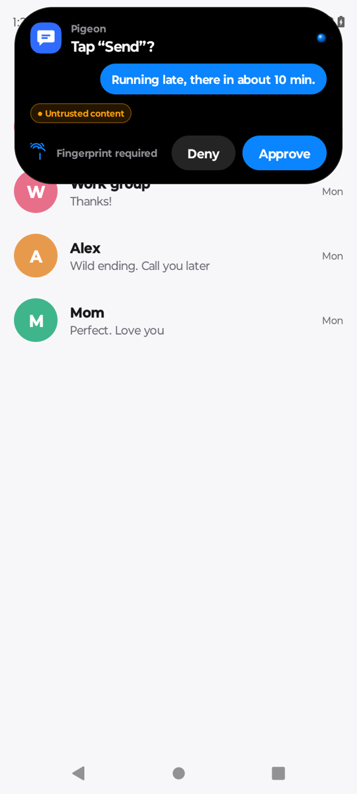

Hard tech · below the app layer
The model proposes. The OS decides.
The riskiest steps require your fingerprint.
You
Voice · AI keyboard · home screen · watch
agentd · the brains
Codex, Claude, or Qwen 0.8B on the phone. Swappable. No shell, no root. Sees only 16 phone tools.
models stop here
local.agentos · the gate
Leases · Rule of Two · on-device Prompt Guard 2 · approvals bound to the exact action, fingerprint for payments and passwords · hash-chained audit · per-app firewall
Your apps
Unmodified.
Rule of Two
Untrusted text + private data + outward action = a human decides. Codes read from the screen can never be typed out.
6/6 injections flagged
Prompt Guard 2 (22M, int8 ONNX) runs on the phone. 0 false flags on the test set.
1.86 s
Median auto-reviewer decision on a low-risk step. Payments and passwords always need a fingerprint.
38/38 · 12/12
Cross-app memory: "reply that I'm late" finds the right person and app. Held-out set 12/12, one model call instead of 2 to 3.
26/30 offline
Qwen3.5-0.8B on the phone drives real tasks (was 0/30). Switches in automatically when the network drops.
476 tracker domains
Kernel firewall by app ID. The SNI watcher names the company; one tap blocks it, the app keeps working.

Native card. Untrusted content is labeled.

A planted attack in our test app, flagged on the phone.
AgentOS · Accessibility layer + Android Keystore + kernel firewall · the model's plan can be fooled; an outward action without your approval cannot happen3 / 5